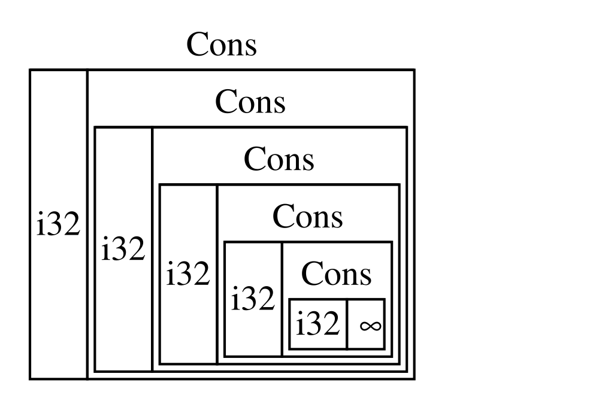

استفاده از Box<T> برای اشاره به دادهها در Heap
سادهترین اشارهگر (Pointer) هوشمند یک جعبه است که نوع آن به صورت Box<T> نوشته میشود. جعبهها به شما امکان میدهند دادهها را در heap ذخیره کنید به جای stack. چیزی که در stack باقی میماند، اشارهگر (Pointer)ی به دادههای heap است. برای مرور تفاوت بین stack و heap به فصل ۴ مراجعه کنید.
جعبهها هیچ سربار عملکردی ندارند، بهجز ذخیره دادههای خود در heap به جای stack. اما آنها قابلیتهای اضافی زیادی ندارند. شما اغلب آنها را در این موقعیتها استفاده خواهید کرد:
- هنگامی که نوعی دارید که اندازه آن در زمان کامپایل مشخص نیست و میخواهید از مقداری از آن نوع در محیطی که نیاز به اندازه دقیق دارد استفاده کنید.
- هنگامی که مقدار زیادی داده دارید و میخواهید مالکیت را انتقال دهید، اما اطمینان حاصل کنید که دادهها هنگام انجام این کار کپی نمیشوند.
- هنگامی که میخواهید مالک یک مقدار باشید و فقط اهمیت میدهید که آن نوع، یک صفت خاص را پیادهسازی کرده باشد نه اینکه از یک نوع خاص باشد.
اولین حالت را در بخش “فعالسازی انواع بازگشتی با استفاده از جعبهها” بررسی خواهیم کرد. در حالت دوم، انتقال مالکیت مقدار زیادی داده میتواند زمان زیادی بگیرد زیرا دادهها در stack کپی میشوند. برای بهبود عملکرد در این حالت، میتوانیم مقدار زیادی داده را در heap و در یک جعبه ذخیره کنیم. سپس، تنها مقدار کمی از دادههای اشارهگر (Pointer) در stack کپی میشود، در حالی که دادههایی که به آنها اشاره میکند در یک مکان در heap باقی میمانند. حالت سوم به نام شیء صفت شناخته میشود و فصل ۱۸ بخشی کامل به نام “استفاده از اشیای صفت که به شما اجازه میدهند مقادیر از انواع مختلف داشته باشید” به این موضوع اختصاص داده است. بنابراین چیزی که اینجا یاد میگیرید، دوباره در فصل ۱۸ استفاده خواهید کرد!
ذخیرهٔ دادهها در Heap
قبل از اینکه مورد استفاده ذخیره در heap برای Box<T> را بحث کنیم، نحو و نحوه تعامل با مقادیر ذخیرهشده در یک Box<T> را پوشش خواهیم داد.
لیستینگ ۱۵-۱ نشان میدهد چگونه میتوان از یک جعبه برای ذخیره مقدار i32 در heap استفاده کرد:
fn main() {
let b = Box::new(5);
println!("b = {b}");
}ما متغیر b را تعریف میکنیم تا مقدار یک Box که به مقدار 5 اشاره میکند را داشته باشد، که در heap تخصیص داده شده است. این برنامه b = 5 را چاپ میکند؛ در این حالت، میتوانیم به دادههای موجود در جعبه دسترسی داشته باشیم، مشابه حالتی که این دادهها در stack بودند. درست مثل هر مقدار مالک، وقتی یک جعبه از دامنه خارج میشود، همان طور که b در پایان main این کار را میکند، آزاد میشود. آزادسازی هم برای جعبه (ذخیرهشده در stack) و هم دادههایی که به آن اشاره میکند (ذخیرهشده در heap) اتفاق میافتد.
قرار دادن یک مقدار واحد در heap خیلی مفید نیست، بنابراین جعبهها را بهتنهایی به این شکل خیلی استفاده نخواهید کرد. داشتن مقادیری مانند یک i32 در stack، جایی که بهطور پیشفرض ذخیره میشوند، در اکثر موارد مناسبتر است. بیایید به حالتی نگاه کنیم که جعبهها به ما امکان میدهند انواعی را تعریف کنیم که بدون آنها نمیتوانستیم.
فعالسازی انواع بازگشتی با استفاده از جعبهها
یک مقدار از نوع بازگشتی میتواند مقدار دیگری از همان نوع را بهعنوان بخشی از خود داشته باشد. انواع بازگشتی یک مسئله ایجاد میکنند زیرا در زمان کامپایل، Rust باید بداند یک نوع چقدر فضا اشغال میکند. با این حال، تودرتویی مقادیر انواع بازگشتی میتواند بهطور نظری بینهایت ادامه یابد، بنابراین Rust نمیتواند بداند که مقدار چقدر فضا نیاز دارد. چون جعبهها یک اندازه مشخص دارند، میتوانیم انواع بازگشتی را با قرار دادن یک جعبه در تعریف نوع بازگشتی فعال کنیم.
بهعنوان مثالی از یک نوع بازگشتی، بیایید به لیست cons نگاه کنیم. این یک نوع داده است که معمولاً در زبانهای برنامهنویسی تابعی یافت میشود. نوع لیست cons که تعریف خواهیم کرد ساده است به جز بازگشت؛ بنابراین، مفاهیم موجود در مثالی که با آن کار خواهیم کرد، هر زمان که وارد موقعیتهای پیچیدهتری با انواع بازگشتی شوید مفید خواهند بود.
اطلاعات بیشتر درباره لیست Cons
یک لیست cons یک ساختار دادهای است که از زبان برنامهنویسی Lisp و گویشهای آن میآید و از جفتهای تودرتو تشکیل شده است و نسخه Lisp از یک لیست پیوندی است. نام آن از تابع cons (مخفف “تابع ساخت” یا Construct Function) در Lisp گرفته شده است که یک جفت جدید را از دو آرگومان خود میسازد. با فراخوانی cons روی یک جفت که شامل یک مقدار و یک جفت دیگر است، میتوانیم لیستهای cons ساختهشده از جفتهای بازگشتی را ایجاد کنیم.
برای مثال، در اینجا نمایشی شبهکد از یک لیست cons شامل لیست 1, 2, 3 آمده است که هر جفت در داخل پرانتز قرار دارد:
(1, (2, (3, Nil)))
هر آیتم در یک لیست cons شامل دو عنصر است: مقدار آیتم فعلی و آیتم بعدی. آخرین آیتم در لیست تنها شامل مقداری به نام Nil است و آیتم بعدی ندارد. یک لیست cons با فراخوانی بازگشتی تابع cons تولید میشود. نام متعارف برای نشان دادن حالت پایه بازگشت، Nil است. توجه داشته باشید که این با مفهوم “null” یا “nil” در فصل ۶ که یک مقدار نامعتبر یا غایب است، متفاوت است.
لیست cons یک ساختار دادهای نیست که بهطور معمول در Rust استفاده شود. در اکثر مواقع وقتی یک لیست از آیتمها در Rust دارید، استفاده از Vec<T> انتخاب بهتری است. سایر انواع بازگشتی پیچیدهتر در موقعیتهای مختلف مفید هستند، اما با شروع از لیست cons در این فصل، میتوانیم بررسی کنیم که چگونه جعبهها به ما اجازه میدهند یک نوع داده بازگشتی را بدون حواسپرتی زیاد تعریف کنیم.
لیستینگ ۱۵-۲ حاوی یک تعریف enum برای یک لیست cons است. توجه داشته باشید که این کد هنوز کامپایل نمیشود زیرا نوع List اندازه شناختهشدهای ندارد، که آن را توضیح خواهیم داد.
enum List {
Cons(i32, List),
Nil,
}
fn main() {}توجه: ما در حال پیادهسازی یک لیست cons هستیم که تنها مقادیر
i32را نگه میدارد، برای اهداف این مثال. میتوانستیم آن را با استفاده از جنریکها، همانطور که در فصل ۱۰ بحث کردیم، پیادهسازی کنیم تا یک نوع لیست cons تعریف کنیم که بتواند مقادیر هر نوعی را ذخیره کند.
استفاده از نوع List برای ذخیره لیست 1, 2, 3 شبیه به کدی خواهد بود که در لیستینگ ۱۵-۳ آورده شده است:
enum List {
Cons(i32, List),
Nil,
}
// --snip--
use crate::List::{Cons, Nil};
fn main() {
let list = Cons(1, Cons(2, Cons(3, Nil)));
}اولین مقدار Cons مقدار 1 و یک مقدار دیگر از نوع List را نگه میدارد. این مقدار List یک مقدار دیگر از نوع Cons است که مقدار 2 و یک مقدار دیگر از نوع List را نگه میدارد. این مقدار List یک مقدار دیگر از نوع Cons را نگه میدارد که مقدار 3 و یک مقدار دیگر از نوع List را دارد که در نهایت Nil، متغیر غیر بازگشتی که پایان لیست را نشان میدهد، است.
اگر سعی کنیم کد در لیستینگ ۱۵-۳ را کامپایل کنیم، خطایی را دریافت میکنیم که در لیستینگ ۱۵-۴ نشان داده شده است:
$ cargo run
Compiling cons-list v0.1.0 (file:///projects/cons-list)
error[E0072]: recursive type `List` has infinite size
--> src/main.rs:1:1
|
1 | enum List {
| ^^^^^^^^^
2 | Cons(i32, List),
| ---- recursive without indirection
|
help: insert some indirection (e.g., a `Box`, `Rc`, or `&`) to break the cycle
|
2 | Cons(i32, Box<List>),
| ++++ +
For more information about this error, try `rustc --explain E0072`.
error: could not compile `cons-list` (bin "cons-list") due to 1 previous error
خطا نشان میدهد که این نوع “اندازه بینهایت” دارد. دلیل این است که ما List را با یک متغیر تعریف کردهایم که بازگشتی است: بهطور مستقیم یک مقدار دیگر از نوع خود را نگه میدارد. در نتیجه، Rust نمیتواند بفهمد چقدر فضا نیاز دارد تا یک مقدار از نوع List را ذخیره کند. بیایید بررسی کنیم چرا این خطا را دریافت میکنیم. ابتدا، نگاهی به این میاندازیم که Rust چگونه تصمیم میگیرد چه مقدار فضا برای ذخیره یک مقدار از نوع غیر بازگشتی نیاز دارد.
محاسبه اندازه یک نوع غیر بازگشتی
ساختار Message را که در لیستینگ ۶-۲ تعریف کردهایم، بهخاطر بیاورید وقتی که در فصل ۶ در مورد تعریفهای enum بحث کردیم:
enum Message {
Quit,
Move { x: i32, y: i32 },
Write(String),
ChangeColor(i32, i32, i32),
}
fn main() {}برای تعیین اینکه چقدر فضا برای یک مقدار از نوع Message اختصاص داده شود، Rust هر یک از متغیرها را بررسی میکند تا ببیند کدام متغیر بیشترین فضا را نیاز دارد. Rust میبیند که Message::Quit نیازی به فضا ندارد، Message::Move نیاز به فضای کافی برای ذخیره دو مقدار i32 دارد، و همینطور ادامه میدهد. چون تنها یک متغیر استفاده خواهد شد، بیشترین فضای مورد نیاز برای یک مقدار Message فضایی است که بزرگترین متغیر آن اشغال میکند.
این را با حالتی مقایسه کنید که Rust سعی میکند تعیین کند چه مقدار فضا برای یک نوع بازگشتی مانند enum List در لیستینگ ۱۵-۲ نیاز است. کامپایلر با نگاه کردن به متغیر Cons شروع میکند که یک مقدار از نوع i32 و یک مقدار از نوع List را نگه میدارد. بنابراین، Cons به فضایی معادل اندازه یک i32 بهعلاوه اندازه یک List نیاز دارد. برای فهمیدن اینکه نوع List به چه مقدار حافظه نیاز دارد، کامپایلر متغیرها را بررسی میکند و از متغیر Cons شروع میکند. متغیر Cons یک مقدار از نوع i32 و یک مقدار از نوع List را نگه میدارد، و این فرآیند بهطور بینهایت ادامه مییابد، همانطور که در شکل ۱۵-۱ نشان داده شده است.

شکل ۱۵-۱: یک List بینهایت شامل متغیرهای Cons بینهایت
بهدست آوردن یک نوع بازگشتی با اندازهٔ مشخص
چون Rust نمیتواند بفهمد چه مقدار فضا باید برای انواع تعریفشده بهصورت بازگشتی تخصیص دهد، کامپایلر با این پیشنهاد کمکی خطا میدهد:
help: insert some indirection (e.g., a `Box`, `Rc`, or `&`) to break the cycle
|
2 | Cons(i32, Box<List>),
| ++++ +
در این پیشنهاد، “غیرمستقیمسازی” به این معنا است که بهجای ذخیره مستقیم یک مقدار، باید ساختار داده را تغییر دهیم تا مقدار را بهصورت غیرمستقیم با ذخیره یک اشارهگر (Pointer) به مقدار ذخیره کند.
چون Box<T> یک اشارهگر (Pointer) است، Rust همیشه میداند که یک Box<T> به چه مقدار فضا نیاز دارد: اندازه یک اشارهگر (Pointer) بر اساس مقدار دادهای که به آن اشاره میکند تغییر نمیکند. این بدان معنا است که میتوانیم یک Box<T> را در متغیر Cons قرار دهیم بهجای یک مقدار دیگر از نوع List. Box<T> به مقدار بعدی List اشاره میکند که روی heap خواهد بود بهجای داخل متغیر Cons. بهصورت مفهومی، ما همچنان یک لیست داریم که از لیستهای دیگری تشکیل شده است، اما این پیادهسازی اکنون بیشتر شبیه قرار دادن آیتمها در کنار یکدیگر است تا داخل یکدیگر.
ما میتوانیم تعریف enum List در لیستینگ ۱۵-۲ و استفاده از List در لیستینگ ۱۵-۳ را به کد موجود در لیستینگ ۱۵-۵ تغییر دهیم، که کامپایل خواهد شد:
enum List {
Cons(i32, Box<List>),
Nil,
}
use crate::List::{Cons, Nil};
fn main() {
let list = Cons(1, Box::new(Cons(2, Box::new(Cons(3, Box::new(Nil))))));
}متغیر Cons به اندازهای برابر با یک i32 بهعلاوه فضای لازم برای نگهداری دادههای اشارهگر Box نیاز دارد. متغیر Nil هیچ مقداری را ذخیره نمیکند، بنابراین به فضای کمتری روی پشته نسبت به Cons نیاز دارد. اکنون میدانیم که هر مقدار از نوع List فضایی برابر با اندازهی یک i32 بهعلاوه اندازهی دادهی اشارهگر Box اشغال میکند. با استفاده از یک Box، زنجیره بازگشتی بینهایت را شکستهایم، بنابراین کامپایلر میتواند اندازه مورد نیاز برای ذخیره یک مقدار List را محاسبه کند. شکل 15-2 نشان میدهد که متغیر Cons اکنون چگونه به نظر میرسد.

شکل ۱۵-۲: یک List که بینهایت نیست زیرا Cons یک Box نگه میدارد
جعبهها تنها غیرمستقیمسازی و تخصیص heap را فراهم میکنند؛ آنها هیچ قابلیت خاص دیگری ندارند، مانند آنچه با دیگر انواع اشارهگر (Pointer) هوشمند خواهیم دید. آنها همچنین سربار عملکردی که این قابلیتهای خاص ایجاد میکنند را ندارند، بنابراین میتوانند در مواردی مانند لیست cons مفید باشند که غیرمستقیمسازی تنها ویژگی مورد نیاز است. ما موارد استفاده بیشتری از جعبهها را نیز در فصل ۱۸ بررسی خواهیم کرد.
نوع Box<T> یک اشارهگر (Pointer) هوشمند است زیرا ویژگی Deref را پیادهسازی میکند، که به مقادیر Box<T> اجازه میدهد مانند ارجاعات رفتار کنند. وقتی یک مقدار Box<T> از دامنه خارج میشود، دادههای heap که جعبه به آن اشاره میکند نیز به دلیل پیادهسازی ویژگی Drop پاکسازی میشود. این دو ویژگی برای عملکرد انواع دیگر اشارهگر (Pointer)های هوشمند که در بقیه این فصل مورد بحث قرار میدهیم، اهمیت بیشتری خواهند داشت. بیایید این دو ویژگی را با جزئیات بیشتری بررسی کنیم.